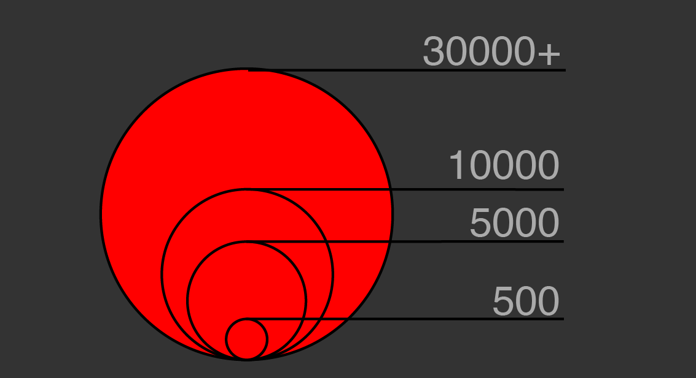

AIDS is a major epidemic in African countries and is home to roughly 70% of all people living with AIDS in the world. While the number of deaths might seem high in Northern Africa, this region of Africa has some of the lowest numbers on the continent. Organizations like the
World Health Organization,
UNAIDS, and the
Elton John AIDS Foundation are all making efforts to prevents AIDS in Africa and
the entire world. To find out more information and look at data for other countries around the world, be sure to check out
the World Health Organizations database of information.
Sources: World Health Organization, Worldbank.org, Wikipedia article HIV/AIDS in Africa
